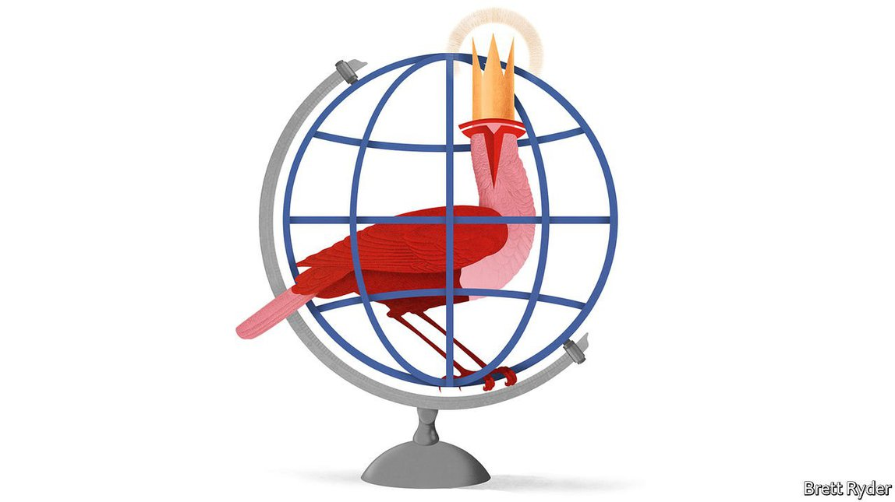

Text
2021-05-12T14:41:19+00:00
Schumpeter
熊彼特
熊彼特
The magical realism of Tesla
特斯拉的魔幻现实主义
特斯拉的魔幻現實主義
Versus the blunt reality of geopolitics
对阵赤裸裸的地缘政治现实
對陣赤裸裸的地緣政治現實
YOU HAVE to hand it to the “technoking”. For all his impish self-aggrandisement, mockery of deadlines, baiting of regulators and soon-to-be sideline as a “Saturday Night Live” comedy host, Elon Musk is deadly serious about technology. So serious, in fact, that as he was discussing the nitty-gritty of neural networks on an earnings call on April 26th, Tesla’s boss did not miss a beat when what sounded like his infant son let out a wail in the background. The electric-car maker’s record net profit of $438m in the first quarter, the seventh straight in the black, came as an afterthought.
你不得不服这位“技术之王”。尽管他常常恶搞式地自吹自擂、嘲讽最后期限、故意激怒监管机构，而且很快还会客串主持喜剧节目《周六夜现场》（Saturday Night Live），但马斯克对技术的态度是极其认真的。认真到什么程度呢？4月26日他在财报电话会议上讨论神经网络的细节时，背景似乎传来了他尚在襁褓中的儿子的尖声啼哭，但这位特斯拉老板一个格楞都没打，继续往下说。而关于这家电动汽车制造商在一季度净利润达到创纪录的4.38亿美元，连续七个季度实现盈利，他不过是在最后随意提了一句。
你不得不服這位“技術之王”。儘管他常常惡搞式地自吹自擂、嘲諷最後期限、故意激怒監管機構，而且很快還會客串主持喜劇節目《周六夜現場》（Saturday Night Live），但馬斯克對技術的態度是極其認真的。認真到什麼程度呢？4月26日他在財報電話會議上討論神經網絡的細節時，背景似乎傳來了他尚在襁褓中的兒子的尖聲啼哭，但這位特斯拉老闆一個格楞都沒打，繼續往下說。而關於這家電動汽車製造商在一季度凈利潤達到創紀錄的4.38億美元，連續七個季度實現盈利，他不過是在最後隨意提了一句。
Such is the allure of Tesla’s whirring money machine that many now give the benefit of the doubt to Mr Musk’s more eccentric claims. His latest involves artificial intelligence (AI). In the future Tesla will be remembered not just as an electric-vehicle (EV) and renewable-energy pioneer, he says, but also as an AI and robotics company. He bases this on a belief that it is close to cracking the challenge of self-driving cars using just eight cameras, machine learning and a computerised brain in the car that reacts with superhuman speed. He calls full self-driving “one of the hardest technical problems…that’s maybe ever existed”.
特斯拉就像一台开动的印钞机，其吸引力之大，以至于现在很多人都愿意搁置疑问，选择相信马斯克的奇谈怪论。他最新的言论涉及人工智能（AI）。他声称，未来，特斯拉将名留青史不仅因为它是电动汽车和可再生能源的先驱，还因为它是一家人工智能和机器人技术公司。这是因为他相信只需要八个摄像头、机器学习，以及一个能以超越人类的速度做出反应的车载计算式大脑，很快就能克服无人驾驶汽车面临的挑战。他称完全自动驾驶“可能是有史以来……最棘手的技术问题之一”。
特斯拉就像一台開動的印鈔機，其吸引力之大，以至於現在很多人都願意擱置疑問，選擇相信馬斯克的奇談怪論。他最新的言論涉及人工智能（AI）。他聲稱，未來，特斯拉將名留青史不僅因為它是電動汽車和可再生能源的先驅，還因為它是一家人工智能和機器人技術公司。這是因為他相信只需要八個攝像頭、機器學習，以及一個能以超越人類的速度做出反應的車載計算式大腦，很快就能克服無人駕駛汽車面臨的挑戰。他稱完全自動駕駛“可能是有史以來……最棘手的技術問題之一”。
Amid the techno-optimism, though, Tesla also faces the dreary reality of everyday life. Though it expects to deliver about 50% more vehicles this year than in 2020, or around 750,000, like other carmakers it is struggling with a shortage of computer chips. The fiery crash of a Model S in Texas, killing two, has raised concerns about its self-driving technology (reports that its Autopilot function was involved are “completely false”, Mr Musk said). A pandemic-related shortage of engineers hit its output in China, source of much of its recent growth. And the Chinese authorities, which used to shower love on the American firm, are showing signs of Tesla fatigue. Mr Musk may one day find the boundaries of his kingdom constrained not by physics but by geopolitics.
然而，即便满怀技术乐观主义，特斯拉也还是要面对无趣的日常现实。尽管它预计今年的交付量比2020年高50%左右，也就是交付约75万辆，但和其他汽车制造商一样，它也受到芯片短缺问题的困扰。最近一辆Model S在得克萨斯州撞毁并起火，造成两人死亡，引发了人们对特斯拉无人驾驶技术的担忧（马斯克表示，说事故起因与特斯拉的辅助驾驶系统Autopilot有关的报道是“完全错误的”）。新冠疫情造成的工程师短缺影响了特斯拉在中国的产量，而中国是它近年增长的主要来源。而过去对这家美国公司宠爱有加的中国当局现在也显现出对特斯拉的审美疲劳。或许有一天，马斯克会发现限制自己王国边界的并非物理，而是地缘政治。
然而，即便滿懷技術樂觀主義，特斯拉也還是要面對無趣的日常現實。儘管它預計今年的交付量比2020年高50%左右，也就是交付約75萬輛，但和其他汽車製造商一樣，它也受到芯片短缺問題的困擾。最近一輛Model S在得克薩斯州撞毀並起火，造成兩人死亡，引發了人們對特斯拉無人駕駛技術的擔憂（馬斯克表示，說事故起因與特斯拉的輔助駕駛系統Autopilot有關的報道是“完全錯誤的”）。新冠疫情造成的工程師短缺影響了特斯拉在中國的產量，而中國是它近年增長的主要來源。而過去對這家美國公司寵愛有加的中國當局現在也顯現出對特斯拉的審美疲勞。或許有一天，馬斯克會發現限制自己王國邊界的並非物理，而是地緣政治。
He is no longer alone in talking in grandiose terms about Tesla. These days sober sorts vie to justify the firm’s valuation of $700bn or so, which puts all other carmakers in the shade. When describing its potential, Jed Dorsheimer of Canaccord Genuity, a Canadian asset manager, starts with the invention of the printing press in 15th-century Europe. Adam Jonas of Morgan Stanley, an investment bank, believes Mr Musk’s EVs are in the midst of something akin to a “Model-T moment”—provided he can, like Henry Ford, crack mass manufacturing to make Teslas more affordable. Both compare Tesla to Apple, the American technology giant, to illustrate how Mr Musk could create a money-spinning ecosystem of gadgets and services that reinforce each other.
马斯克不再是王婆卖瓜了。如今，头脑冷静的人也都纷纷认可该公司7000亿美元左右的估值是合理的，这让所有其他汽车制造商相形见绌。在描述特斯拉的潜力时，加拿大资产管理公司Canaccord Genuity的杰德·多西默（Jed Dorsheimer）从15世纪欧洲发明印刷机说起。投资银行摩根士丹利的亚当·乔纳斯（Adam Jonas）认为马斯克的电动汽车的现状类似于福特的“T型车阶段”——如果他能像亨利·福特那样解决量产问题，让大家更买得起特斯拉的话。这两人都把特斯拉和美国技术巨头苹果相提并论，以阐明马斯克如何能够创造出一个设备和服务相互加强的盈利生态系统。
馬斯克不再是王婆賣瓜了。如今，頭腦冷靜的人也都紛紛認可該公司7000億美元左右的估值是合理的，這讓所有其他汽車製造商相形見絀。在描述特斯拉的潛力時，加拿大資產管理公司Canaccord Genuity的傑德·多西默（Jed Dorsheimer）從15世紀歐洲發明印刷機說起。投資銀行摩根士丹利的亞當·喬納斯（Adam Jonas）認為馬斯克的電動汽車的現狀類似於福特的“T型車階段”——如果他能像亨利·福特那樣解決量產問題，讓大家更買得起特斯拉的話。這兩人都把特斯拉和美國技術巨頭蘋果相提並論，以闡明馬斯克如何能夠創造出一個設備和服務相互加強的盈利生態系統。
For Tesla bulls, the maker of EVs indeed has more in common with that of iPhones than it does with established car firms. Its boosters get excited about Silicon Valley-like innovation, not car sales. On Wall Street the value ascribed to Tesla’s relatively low-margin EV business is being eclipsed by the promise of more nebulous but potentially more lucrative ones, mostly involving software: the sort of connected services, such as maps, entertainment, ride-sharing, semi-autonomous driving and over-the-air upgrades that make Teslas a geek’s dream. Few assume, as Mr Musk does, that fully autonomous “robotaxis” are imminent. But some, such as Mr Jonas, think Tesla ride-sharing fleets, probably with someone at the wheel, will soon be rolling through city streets.
在看涨特斯拉的人眼里，这家电动汽车制造商确实与苹果而不是老牌车厂有更多共同点。让支持者兴奋的是它的硅谷式创新，而不是汽车销量。在华尔街，人们认为特斯拉利润相对较低的电动汽车业务的价值要逊于那些尚不清晰但可能更赚钱的业务，后者主要涉及软件，也就是诸如地图、娱乐、拼车、半自动驾驶和OTA空中软件升级等联网服务，它们让特斯拉汽车成为极客的梦想。很少有人像马斯克一样，认为完全自主的“机器人出租车”已近在眼前。但包括乔纳斯在内的一些人认为，特斯拉的拼车车队——很可能是有人驾驶的——很快就会行驶在城市的街道上。
在看漲特斯拉的人眼裡，這家電動汽車製造商確實與蘋果而不是老牌車廠有更多共同點。讓支持者興奮的是它的硅谷式創新，而不是汽車銷量。在華爾街，人們認為特斯拉利潤相對較低的電動汽車業務的價值要遜於那些尚不清晰但可能更賺錢的業務，後者主要涉及軟件，也就是諸如地圖、娛樂、拼車、半自動駕駛和OTA空中軟件升級等聯網服務，它們讓特斯拉汽車成為極客的夢想。很少有人像馬斯克一樣，認為完全自主的“機器人出租車”已近在眼前。但包括喬納斯在內的一些人認為，特斯拉的拼車車隊——很可能是有人駕駛的——很快就會行駛在城市的街道上。
The magical realism may go beyond that. Besides AI and software, Mr Musk is also doubling down on Tesla’s original plan to build, alongside an affordable car, a zero-emission energy business. He has said his intention is to produce three terawatt-hours of battery capacity within a decade, more than 12 times as much as the goal of Volkswagen, its nearest EV competitor. Besides bringing the cost of cars down to $25,000 each, the batteries will also go towards Tesla’s home-energy-storage business. That would create what he calls a “giant distributed utility” that can cope with increased electricity demand as more people use EVs, as well as provide grid stability at times of bad weather. Mr Dorsheimer, who is particularly bullish on Tesla’s solar and storage business, thinks its energy brand could become “Apple-esque”.
带有魔幻现实主义色彩的可能还不止这些。除了人工智能和软件，马斯克也在特斯拉最初的计划上加倍投入，即在制造平价汽车之外，还要开发零排放的能源业务。他曾表示自己要在十年内实现三太瓦时的电池产能，是它最强劲的电动汽车竞争对手大众的目标的12倍还多。除了把每辆车的成本降至2.5万美元之外，这些电池还将用于特斯拉的家庭储能业务。这将创造出他所说的“巨型分布式电力”，不但能够确保电网在恶劣天气里稳定供电，还能应对随电动汽车用户增加而水涨船高的用电需求。多西默尤其看好特斯拉的太阳能和储能业务，他认为特斯拉在能源上可以成为“类似苹果的”品牌。
帶有魔幻現實主義色彩的可能還不止這些。除了人工智能和軟件，馬斯克也在特斯拉最初的計劃上加倍投入，即在製造平價汽車之外，還要開發零排放的能源業務。他曾表示自己要在十年內實現三太瓦時的電池產能，是它最強勁的電動汽車競爭對手大眾的目標的12倍還多。除了把每輛車的成本降至2.5萬美元之外，這些電池還將用於特斯拉的家庭儲能業務。這將創造出他所說的“巨型分布式電力”，不但能夠確保電網在惡劣天氣里穩定供電，還能應對隨電動汽車用戶增加而水漲船高的用電需求。多西默尤其看好特斯拉的太陽能和儲能業務，他認為特斯拉在能源上可以成為“類似蘋果的”品牌。
Thinking different
非同凡想
非同凡想
Apple, worth more than three times as much as Tesla, is a flattering firm to be compared to. It is also the prime example of how deftly an American company can handle the ebb and flow of superpower rivalry. Yet when it comes to geopolitics, Tesla may be at a disadvantage. It is just as global as Apple: last year it made half its sales outside America; 21% came from China. But the $2trn global car market is more than four times the size of the one for mobile phones. With many more firms involved, cars are more politically sensitive than smartphones. Initially countries like China and Germany threw down the welcome mat for Tesla’s gigafactories, partly to goad local firms into producing better EVs. Now that this is happening, the pressure to keep Tesla down is increasing.
苹果的市值是特斯拉的三倍多，跟它相提并论无疑是一种褒扬。苹果也是美国公司在风云变幻的超级大国角力中巧妙周旋的典范。然而说到地缘政治，特斯拉可能有点吃亏。它和苹果一样是一家全球化的公司：去年它一半的销售额来自美国以外，21%来自中国。但全球2万亿美元的汽车市场的规模是手机市场的四倍多。鉴于参与其中的企业数量要多得多，汽车比智能手机更具政治敏感性。起初，中国、德国等国家都敞开大门欢迎特斯拉的超级工厂，一定程度上是为了刺激本土企业生产出更好的电动汽车。既然这已经在发生了，抑制特斯拉的压力也就越来越大。
蘋果的市值是特斯拉的三倍多，跟它相提並論無疑是一種褒揚。蘋果也是美國公司在風雲變幻的超級大國角力中巧妙周旋的典範。然而說到地緣政治，特斯拉可能有點吃虧。它和蘋果一樣是一家全球化的公司：去年它一半的銷售額來自美國以外，21%來自中國。但全球2萬億美元的汽車市場的規模是手機市場的四倍多。鑒於參與其中的企業數量要多得多，汽車比智能手機更具政治敏感性。起初，中國、德國等國家都敞開大門歡迎特斯拉的超級工廠，一定程度上是為了刺激本土企業生產出更好的電動汽車。既然這已經在發生了，抑制特斯拉的壓力也就越來越大。
If Mr Musk is right that self-driving is the future of getting around, concerns about data-gathering and national security are bound to rise. China has already hinted it is sensitive to them. This year the government restricted the use of Tesla vehicles by military personnel and employees of some state-owned firms because of data-security concerns. Mr Jonas, for one, thinks Tesla’s position in China will be “substantially diluted” during the coming decade, as the car market morphs into a transportation utility run and regulated by the state in concert with local champions.
马斯克认为无人驾驶是出行的未来，如果他是对的，那么对数据收集和国家安全的担忧势必会上升。中国已经暗示自己对这类问题很敏感。今年，出于数据安全的考虑，中国政府限制了部队人员和一些国企员工使用特斯拉汽车。乔纳斯的看法是，未来十年，随着汽车市场转变为由政府与本土领军企业共同运营和监管的公共交通事业，特斯拉在中国的地位将会“大幅下滑”。
馬斯克認為無人駕駛是出行的未來，如果他是對的，那麼對數據收集和國家安全的擔憂勢必會上升。中國已經暗示自己對這類問題很敏感。今年，出於數據安全的考慮，中國政府限制了部隊人員和一些國企員工使用特斯拉汽車。喬納斯的看法是，未來十年，隨着汽車市場轉變為由政府與本土領軍企業共同運營和監管的公共交通事業，特斯拉在中國的地位將會“大幅下滑”。
Cyber-paranoia may, of course, make it as hard to sell a Chinese car in America as an American car in China. And compared with the “insanely hard” problems Tesla is trying to crack, even superpower politics must seem like a minor irritation. But although Mr Musk can claim to rule over the realm of physics, politicians, bureaucrats and spooks run much of the real world. That is a source of power that even the technoking cannot disrupt. ■
当然，网络攻击妄想症可能会使得在美国卖中国车和在中国卖美国车一样难。而与特斯拉正试图攻克的“让人抓狂的棘手”问题相比，即使是超级大国的政治争斗应该也会显得无足轻重。但是，尽管马斯克可以声称自己统领物理王国，现实世界在很大程度上是由政客、官僚和情报人员运转的。这是一种即便是技术之王也无法颠覆的权力来源。
當然，網絡攻擊妄想症可能會使得在美國賣中國車和在中國賣美國車一樣難。而與特斯拉正試圖攻克的“讓人抓狂的棘手”問題相比，即使是超級大國的政治爭鬥應該也會顯得無足輕重。但是，儘管馬斯克可以聲稱自己統領物理王國，現實世界在很大程度上是由政客、官僚和情報人員運轉的。這是一種即便是技術之王也無法顛覆的權力來源。